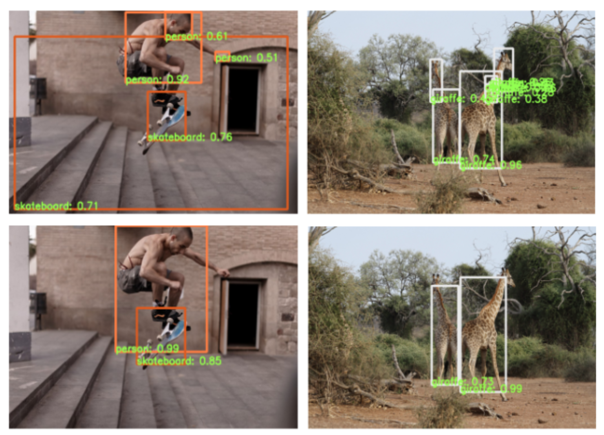

Papers and pre-prints

Unsupervised Object Localization: Observing the Background to Discover Objects
Oriane Siméoni, Chloé Sekkat, Gilles Puy, Antonin Vobecky, Eloi Zablocki and Patrick PérezCVPR, 2023
page paper code demo

Active Learning Strategies for Weakly-Supervised Object Detection
Huy V. Vo, Oriane Siméoni, Spyros Gidaris, Andrei Bursuc, Patrick Pérez and Jean PonceECCV, 2022
page paper code

Drive&Segment: Unsupervised Semantic Segmentation of Urban Scenes via Cross-modal Distillation
Antonin Vobecky, David Hurych, Oriane Siméoni, Spyros Gidaris, Andrei Bursuc, Patrick Pérez and Josef SivicECCV, 2022 (oral presentation)
page paper code


Localizing Objects with Self-Supervised Transformers and no Labels
Oriane Siméoni, Gilles Puy, Huy V Vo, Simon Roburin, Spyros Gidaris, Andrei Bursuc, Patrick Pérez, Renaud Marlet and Jean PonceBMVC, 2021
paper code
Robust image representation for classification, retrieval and object discovery
Oriane SiméoniPhD thesis
thesis

Rethinking deep active learning: Using unlabeled data at model training
Oriane Siméoni, Mateusz Budnik, Yannis Avrithis and Guillaume GravierICPR, 2020
paper code
Local Features and Visual Words Emerge in Activations
Oriane Siméoni, Yannis Avrithis and Ondrej ChumCVPR, 2019
paper code
Graph-based particular object discovery
Oriane Siméoni, Ahmet Iscen, Giorgos Tolias, Yannis Avrithis and Ondrej ChumMVA, 2019
paper
Unsupervised object discovery for instance recognition
Oriane Siméoni, Ahmet Iscen, Giorgos Tolias, Yannis Avrithis and Ondrej ChumWACV, 2018
paper video
Tracking global gene expression responses in T cell differentiation
Oriane Siméoni, Vincent Piras, M. Tomita and Kumar SelvarajooGene, 2015
paper